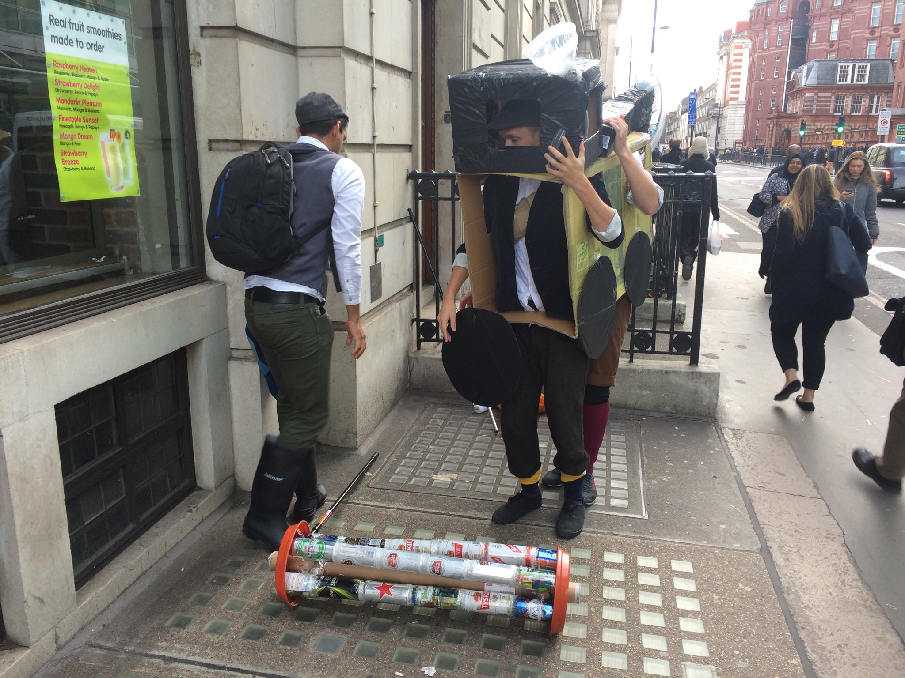
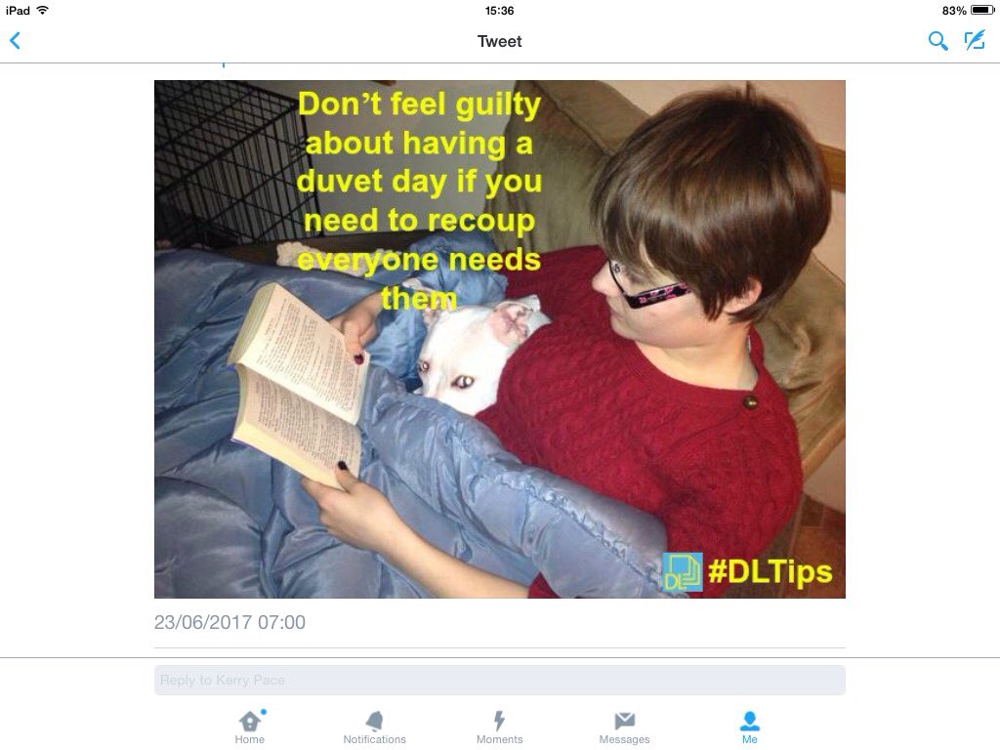
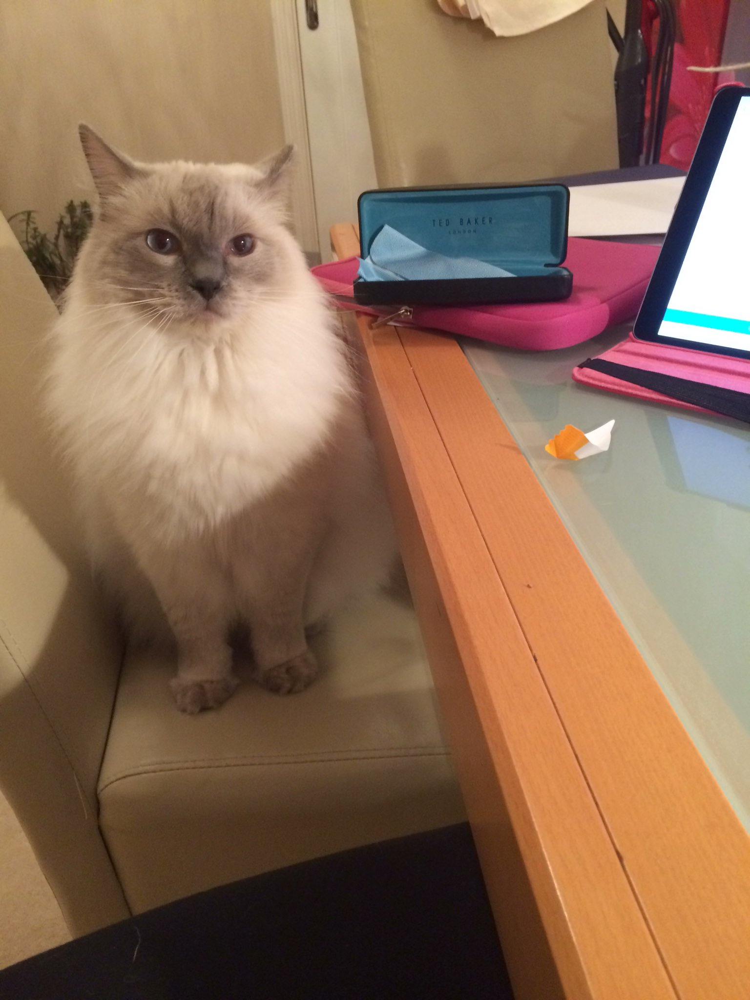
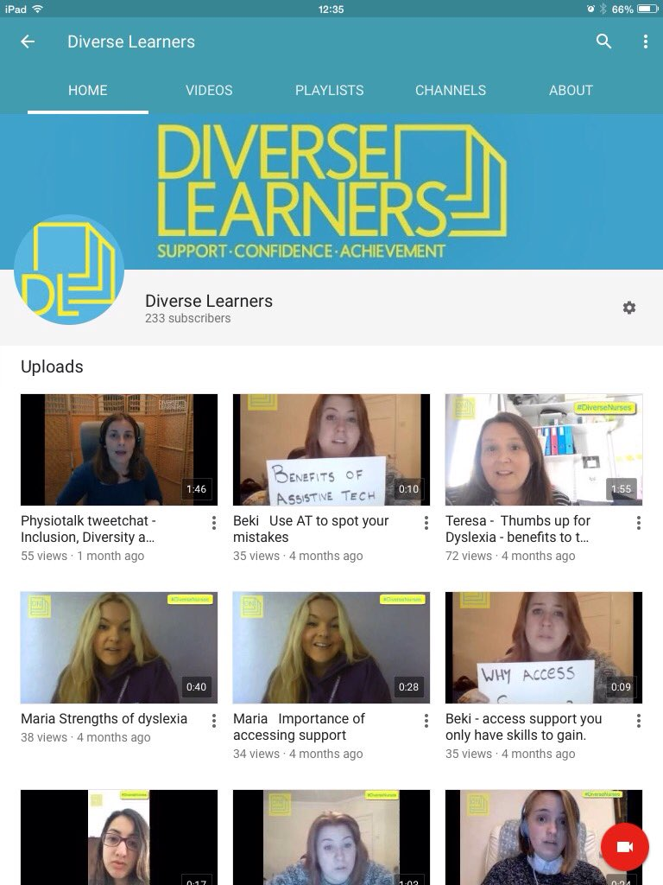
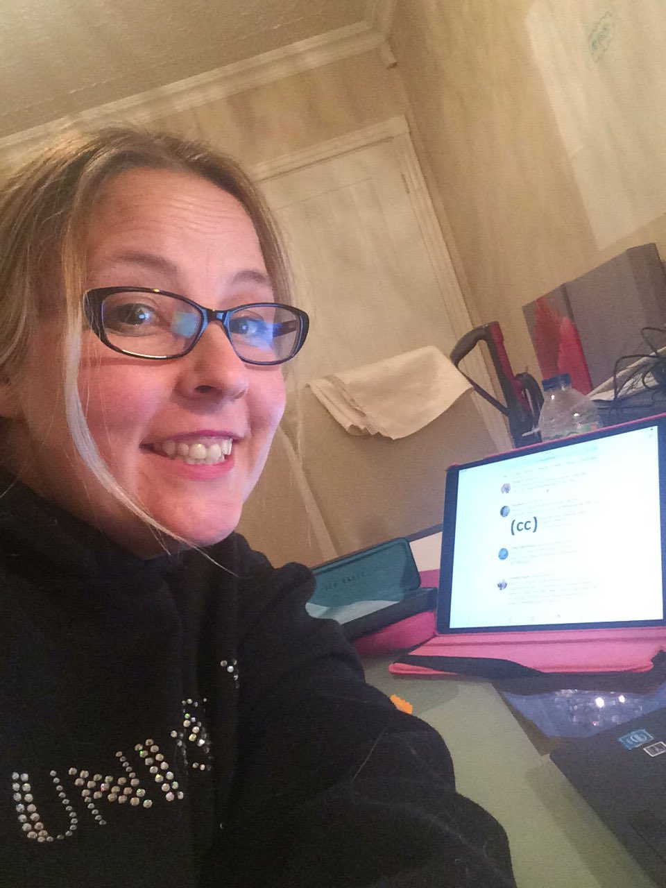

- Double hashtag chat at 2000 with #BYOD4Lchat & #LTHEChat on curation and copyright. All welcome pic.twitter.com/ppDZVAeWFc
- Its going to be fast and furious :) #BYOD4Lchat #LTHEChat https://twitter.com/neilwithnell/status/953715157036920832 …
- This is your 10 minutes warning before @LTHEchat #LTHEchat joins #BYOD4Lchat @BYOD4L for the evening! https://twitter.com/LTHEchat/status/953356185188511744 …
- @BYOD4L A1 #byod4lchat mostly apple..ipad...iPhone..apple TV combines them in classroom. Great for connectivity.
- Evening all #BYOD4Lchat #LTHEchat
- #doublehashtags At first, I was afraid I was petrified Kept thinking I could never live with two hashtags by side But then I spent so many tweets thinking how you did me wrong And I grew strong, and I learned how to use 280 char #BYOD4Lchat #LTHEchat
- Still getting ready @neilwithnell? Hope you are ready! #LTHEchat #BYOD4Lchat https://twitter.com/neilwithnell/status/952988183964344320 …
- @S_J_Lancaster evening Simon! I also learned how to use ctrl-c ctrl-v for 2 hashtags :) #BYOD4Lchat #LTHEchat
- Hahah brilliant #BYOD4Lchat #LTHEchat very well done Simon !!! https://twitter.com/s_j_lancaster/status/953718293046743040 …
- We will start with a question Q1 and ask that you start your reply with A1 and be sure to use the two (yes 2) hashtags #BYOD4Lchat #LTHEchat
- @WarwickLanguage @S_J_Lancaster don’t encourage him or he’ll be lyrical all night long #BYOD4Lchat #LTHEchat
- And we are live! Remember is double hashtags for this evening. So please ensure you use #LTHEChat AND #BYOD4Lchat in all your tweets.
- Q1 Digital curation is the selection, collection and archiving of digital assets. What tools might/do you use? #BYOD4Lchat #LTHEchat
- and now you're back... with that look upon your face #BYOD4Lchat #LTHEchat https://twitter.com/S_J_Lancaster/status/953718293046743040 …
- Saying hello to @debbaff and @sheilmcn #LTHEchat #BYOD4Lchat. Hope is all going well oer at the @BYOD4L HQ!? https://twitter.com/BYOD4L/status/953718591274221570 …
- @kjhaxton @S_J_Lancaster could be a whole new genre of tweet developing #makingasonganddance #LTHEchat #BYOD4Lchat
- A1 obviously I’m going to download all the things and save them as PDFs... #BYOD4Lchat #LTHEchat https://twitter.com/BYOD4L/status/953718831591116802 …
- Day 3 of @BYOD4L and another chat. From 8-9pm I'll be talking curating and bring your own devices for learning #byod4lchat
- All night long...fiesta forever - #BYOD4Lchat #LTHEchat https://twitter.com/kjhaxton/status/953718786963714050 …
- A1 The like button on Twitter. Share to OneNote or Flipboard. TiddlyWiki recently. #BYOD4Lchat #LTHEchat
- A1 I use Scoopit for curation and for finding and a bookmarking Refind https://refind.com/ #BYOD4Lchat #LTHEChat
- A1: Actually, you didn't ask us to define "digital curation" @sheilmcn @debbaff. Is that on purpose? #LTHEchat #BYOD4Lchat https://twitter.com/BYOD4L/status/953718831591116802 …
- Hello everyone, Kerry here Haven't been able to log into Google+ today but have done an audio reflection blog. Tweeting from bed #byod4lchat
- A1 cont’ I’m genuinely rubbish at this. I end up with stuff saved through no end of apps, sites, folders, links and whatnots, and nothing ever does all the things I want. #BYOD4Lchat #LTHEchat
- A1 I'm a fan of #pearltrees also use #diigo and #pinterest #byod4lchat #LTHEchat pic.twitter.com/3ZCTIEnttC
- Of course, depends heavily on context. In day to day life, who doesn't bookmark web pages? #BYOD4Lchat #LTHEchat
- I think #BYOD4Lchat #LTHEchat will be a grand opportunity to grow our personal learning networks.
- #BYOD4Lchat #LTHEChat Was using storify but not sure what’s to use now? A1
- A1 like button, scoopit, and a random mix when I remember #BYOD4Lchat #LTHEchat https://twitter.com/BYOD4L/status/953718831591116802 …
- @S_J_Lancaster @Storify @scoopit A1 You raise an important point of course - the transient life of online curation tools #BYOD4Lchat #LTHEchat #Delicious (triple hashtag)
- A bit late, but glad to join everyone #BYOD4Lchat #LTHEchat
- @kjhaxton A1. I've not got much of a strategy for this. All my phone photos back up to Google, and I have been known to download websites if I want to ensure I have a copy. I've just got my own domain so starting to showcase stuff there. Looking for ideas :-) #LTHEChat #BYOD4Lchat
- Participating in my second ever tweet chat tonight ... @UniStrathclyde people remember to come and join in - if I can do it you can too! Use #byod4lchat and #LTHEchat
- I use my iPad to select, collect and archive digital assets #LTHEchat #BYOD4Lchat
- A1 also the (re-)sharing of these collections? Often this is happening "automatically"? #BYOD4Lchat #LTHEchat
- @james_youdale I hardly ever do this now, prefer a more user friendly social interface, annotate and collect in teams #BYOD4Lchat #LTHEchat
- Hi Everyone! Long time, no talk! A1. I totally kick it old school here. File organizer = Finder on my Mac. Use Zotero 2 collect references & the MS Word add-on 2 do bibliographies & such. In terms of teaching, Learning modules in LMS for class organization. #BYOD4Lchat #LTHEchat https://twitter.com/byod4l/status/953718831591116802 …
- @neilwithnell Hi Neil, nice to meet you. I enjoyed Mondays chat, but just caught the end. #LTHEchat #BYOD4Lchat
- @WarwickLanguage Great another fan. Scoopit is just easy to use and you can make it available to everyone - win win #BYOD4Lchat #LTHEChat
- @cpjobling @james_youdale I do use bookmarks but then I work across several browsers and computers and I don’t have it set to synchronise and then I lose stuff and… I can’t be logged into the same account on all devices so it’s tricky #BYOD4Lchat #LTHEchat
- @SusanMGreig Hi Susan, the storifies are available if you do want to catch up at any point #BYOD4Lchat #LTHEchat
- A1 I also use onedrive to store my assets #LTHEchat #BYOD4Lchat
- Q2 What kinds of information do you curate and why? #BYOD4Lchat #LTHEchat
- A1: I'm lost without a good search function. Files can be anywhere on my computer(s), emails can be anywhere in my folder(s), notes can be in pretty much any application. But I search like a ninja. #BYOD4Lchat #LTHEchat
- A1 I did reflect earlier today that I hoard rather than curate most of the time. But that’s what our devices let us do I guess. #BYOD4Lchat #LTHEchat
- #byod4lchat #LTHEchat Wish was easier to curate + access so you could have "one ring to rule them all" but I also share in multiple ways
- @scottturneruon Are these apps Scott? (I feel like I’m so not using the right stuff here) #BYOD4Lchat #LTHEChat
- A1 #LTHEchat #BYOD4Lchat also use Google Keep as a way to track/bookmark/organise
- @sheilmcn @S_J_Lancaster @Storify @scoopit A1 ... or frustrates as tools you knew and loved pass through the hands of other companies that don't "get" educational merit #BYOD4Lchat #LTHEchat
- A1 I also use Pebble+ #LTHEchat #BYOD4Lchat
- @neilwithnell Will do thanks :-) #BYOD4Lchat #LTHEchat must admit to enjoying the live experience more
- A2 I mainly use curation for that moment "I can use that in class in my AI class" #BYOD4Lchat #LTHEChat
- A1 A bit like @SFaulknerPandO I don't think this is something I'm doing too well on ... I often find myself sharing things on social media that I find interesting to save them on my timeline - often I then forget #byod4lchat #LTHEchat
- @BYOD4L A2 Information that is useful to new and experienced lecturers to help them find a short-cut to papers and evidence based research #thatsmyjob 😉#BYOD4Lchat #LTHEchat
- @BYOD4L A2 teaching resources, useful info, websites I want to come back too, my pearls #BYOD4Lchat #LTHEchat http://www.pearltrees.com/teresamac
- A1 bookmarking everything and hoping for the best! Intend trying Pocket and Padlet but would appreciate recommendations #BYOD4Lchat #LTHEChat
- @james_youdale @cpjobling If I was capable of that degree of separation it might work…but there are a lot of knitting patterns bookmarked at work :) #BYOD4Lchat #LTHEchat
- A2 a mix of stuff, articles, links, etc Why - to read later (note to self) #BYOD4Lchat #LTHEchat https://twitter.com/BYOD4L/status/953720841652654080 …
- @S_J_Lancaster the 3 days I have spent on @BYOD4L event has expanded my personal learning network + strengthened links #byod4lchat #LTHEchat
- A2 - all kinds of links to resources, articles etc and sometimes quite random stuff #BYOD4Lchat #LTHEchat
- A2 websites, images, ideas, music, videos, journal articles, references, examples of stupid, examples of smart, stuff for courses #BYOD4Lchat #LTHEchat https://twitter.com/BYOD4L/status/953720841652654080 …
- Remember is double hashtags this evening! 280 characters = great but if doesn't fit, how about a picture or diagram to illustrate your answer? #LTHEchat #BYOD4Lchat @BYOD4L @LTHEchat https://twitter.com/BYOD4L/status/953710432006692865 …
- #lthechat #byod4lchat A2 photos on Flickr, Pinterest because of space, to document, for re-use, to remind myself and for fun
- @neilwithnell the wonderful thing about digital curation is it doesn't take up too much space! #BYOD4Lchat #LTHEchat
- Q2a: Who curates them and does everyone use any specific methods? #LTHEchat #BYOD4Lchat @BYOD4L #JustThinking https://twitter.com/santanuvasant/status/953721266246225923 …
- AFK - natural break needed #BYOD4Lchat #LTHEchat
- @WarwickLanguage @kjhaxton I'm nothing special, in fact I'm a bit of a bore If I tell a joke, you've probably heard it before But I have a talent, a wonderful thing 'Cause everyone listens when I start to tweet I'm so grateful and proud All I want is to tweet it out loud #BYOD4Lchat #LTHEchat
- @S_J_Lancaster Definitely #LTHEchat #BYOD4Lchat - you need to be prepared for it to change or disappear without notice..
- A2: I curate (hoard) a lot of photos I take. Like to use pictures as metaphors for things so take pictures of everyday objects and interesting situations.#BYOD4Lchat #LTHEchat
- Means and artefacts for personal/professional synthesis and creativity: e.g. eecipes, guides, points of research interest, #LTHEchat #BYOD4Lchat
- A1 Wildfire takes AI created learning points from course and curates content in realtime and at end of course #BYOD4Lchat #LTHEchat http://www.wildfirelearning.co.uk
- A2. Websites, peer reviewed articles, notes, teaching materials, etc. I totally forgot for A1. That I also use @Storify (and they are going away). 😭😭😭 #BYOD4Lchat #LTHEchat https://twitter.com/byod4l/status/953720841652654080 …
- A2 Curate mostly text based content - articles and website urls #BYOD4Lchat #LTHEchat
- A2: think of a caption for this picture for example. #LTHEchat #byod4lchat pic.twitter.com/uWg0rFLn5M
- @RissaChem Hi! I use Mendeley rather than Zotero, but I too find the Word add-on great for retrieving & using the references. #LTHEchat #byod4lchat
- @RissaChem scoop.it is a website (it might be in app form as well I am not sure) and refind is both a website and in app form. #BYOD4Lchat #LTHEChat
- a2. a2. Pretty much anything useful I *might* need later, I just click and save it in my evernote database. space is so cheap as to make worrying about if to collect or not, not worth thinking about. #lthechat #byod4lchat
- @RissaChem @Storify A2 sad to lose #storify, has been so useful, thanks to @cpjobling for his shared export tips #LTHEchat #BYOD4Lchat
- A2 (a) Open educational resources https://www.scoop.it/t/open-educational-resources-by-simon-lancaster … #LTHEchat #BYOD4Lchat
- @kjhaxton @cpjobling @james_youdale That's a good point, I do that too! Chrome for home bookmarks and Firefox for work. Occasionally I export them as a backup. Export also handy if you want to compile a list of links for something. #BYOD4Lchat #LTHEchat
- A2 (b) Concept inventories https://www.scoop.it/t/science-concept-inventories … #BYOD4Lchat #LTHEchat
- A2 I curate recommended @OnDemandBoB Media resources to a Wordpress blog https://biologyonthebox.wordpress.com #BYOD4Lchat #LTHEchat
- A2 Journal articles, websites, videos, images, ... I'm saying I'm not good at this, but I should be ... as an academic developer I feel one of my roles is to curate content for staff #byod4lchat #LTHEchat
- I am feeling reassured that most people find digital curation challenging and feel less crap about my multiple tools #byod4lchat #LTHEchat
- A2 Does anyone else just curate links to other links? E.G. Portals. "We, the meta-linkers" #LTHEchat #byod4lchat
- @BYOD4L A2 too much of everything there’s soooo much awesome info out there & I want to read it all #fail #LTHEchat #BYOD4Lchat pic.twitter.com/6pwLdodSrd
- A1. How about Pinterest? This is very popular with student led content curation.. #byod4lchat #LTHEchat
- #lthechat #byod4lchat A2 use Goodreads to keep track of books I want to read/have read
- A2: Would like to bring a student's perspective here...What kind of information we curate? Well, is literature... #BeingASponge #RefWorks #LTHEchat #BYOD4Lchat https://twitter.com/BYOD4L/status/953720841652654080 …
- great, some really useful materials on BoB #BYOD4Lchat #LTHEchat https://twitter.com/cjrw/status/953722603998498818 …
- A2: anything that has a web address can easily be curated and probably is - by someone. #BYOD4Lchat #LTHEchat
- @SFaulknerPandO @BYOD4L the only way to eat an elephant? a mouthful at a time! #BYOD4Lchat #LTHEchat
- @JennyLewinJones I know a lot of folks who prefer Mendeley and EndNote but I was taught to use reference software by librarians who overwhelmingly liked Zotero, so... I think the important point is that we are both using reference software. #BYOD4Lchat #LTHEchat pic.twitter.com/l489euBJVK
- Never too late! Welcome @HalaMansour. Reminder is double hashtags this evening! #LTHEchat #BYOD4Lchat https://twitter.com/HalaMansour/status/953722805325090816 …
- @neilwithnell @cjrw I’ve only just discovered BoB but am loving it so far (not much need to incorporate media into chemistry classes but I’m finding ways) #BYOD4Lchat #LTHEchat
- So I say to #BYOD4Lchat #LTHEchat Thank you for the questions, the tweets I'm answering Thanks for all the joy they're bringing Who can live without it, I ask in all honesty What would life be? Without a tweetchat what are we? So I say thank you for twitter For giving it to me
- Q3 In what ways can you add value to your digital curations? #BYOD4Lchat #LTHEchat
- @debbaff @KSavage_Strath We can get better at this together #BYOD4Lchat #LTHEchat pic.twitter.com/oFO8ZyBN3B
- @Conphused agreed! here are my translation fails! https://www.pinterest.co.uk/warwicklanguage/lost-in-translation/ … #BYOD4Lchat #LTHEchat
- A2 Anything and mostly anything - pictures, videos, articles, online books etc #LTHEchat #BYOD4Lchat
- Wow ...Some great resources and hints and tips being shared tonight ... #BYOD4Lchat #LTHEChat I have a few of the curation tools I have been using on this link ...I’m gonna be busy updating it ! https://elink.io/937a6ce
- A1 #BYOD4Lchat #LTHEchat Used to use a web-based aggregator called something like http://deli.cio.us but then Library staff began doing it for course designers and they were better at it Other than that… scraps of paper & a pencil
- @BYOD4L A1 terrible at this, my current technique is to leave web pages open on my phone or email myself links. #byod4lchat
- A3 by being more consistent in how I do it, with effective tagging/organisation, by remembering what tool I’m using to help (and probably the password) #BYOD4Lchat #LTHEchat https://twitter.com/BYOD4L/status/953723183240183808 …
- @kjhaxton @neilwithnell @cjrw Not so sure. It's unusual for me to watch anything sciencey on Box of Broadcasts without @SellaTheChemist popping up at some point. #byod4lchat #LTHEchat
- A2 - using them with students, sharing with others, recontexualising, repurposing and commentary and reflection all spring to mind #BYOD4Lchat #LTHEChat
- @RissaChem @JennyLewinJones Just discovered I need an Elsevier login to use Mendeley so I’m not longer sure about it as a tool that I can recommend. #byod4lchat #lthechat
- @kshjensen We've a Pinterest page as many of our creations are visual, also store our #DLtips all in one place #byod4lchat #LTHEchat
- Hey @charlotteacraig you should have a go at the #byod4lchat #LTHEchat from now till 9pm - talking about digital curation which you might find useful in your role (not to mention it's just good to chat with you!)
- @neiledtech @BYOD4L That was my thought process.... but I’ve got a hideous memoery & often can’t remember what I’m searching for #LTHEchat #BYOD4Lchat #helpme 🙈🤪!
- A3: In all the ways I don't actually do. Proper tagging, sharing, making things reusable and reproducible. #LTHEchat #BYOD4Lchat
- @RissaChem @JennyLewinJones I use Mendley as well - can be a bit annoy with multiple citations but love the fact you have the web access and the desktop version. #BYOD4Lchat #LTHEchat
- @neilwithnell @kjhaxton @cjrw @SellaTheChemist Radio, TV or live. He gets everywhere! #LTHEchat #BYOD4Lchat
- @cpjobling @RissaChem @JennyLewinJones I have a love-hate relationship with Mendeley. There are features I love, and other aspects that drive me to distraction. The Elsevier login does not help. #BYOD4Lchat #LTHEchat
- @cpjobling However, I prefer saving things in a traditional ways too. Especially research data #LTHEChat #BYOD4Lchat
- @BYOD4L A3 using social tools and annotation, working with teams and curating together #LTHEchat #BYOD4Lchat as @S_J_Lancaster would say: it's better when we're together! https://youtu.be/u57d4_b_YgI
- A3 try to add value by commenting or linking aspects together ... sometimes do a sketch note if feeling inspired ! #BYOD4Lchat #LTHEChat
- A3 I need to get better at sharing. I save endless links for teaching purposes but never get them to the students. Also reluctant to put in effort incase links break next year and I have to check them all again #BYOD4Lchat #LTHEchat
- Lots of scope for using @OnDemandBoB in different ways https://www.slideshare.net/cjrw2/as-seen-on-tv-using-broadcast-media-in-university-teaching … (which I guess showcases #slideshare as another curation tool #BYOD4Lchat #LTHEchat https://twitter.com/kjhaxton/status/953723090294382592 …
- A3 use them! rather than storing for....#BYOD4Lchat #LTHEchat https://twitter.com/BYOD4L/status/953723183240183808 …
- @scottturneruon @RissaChem @JennyLewinJones I've been a long time Evernote user - it's good on the Mac, and almost completely eliminated my habit of printing out articels and leaving them around the house/office #byod4lchat #LTHEchat
- A3 for example, Sustainable Chemistry Module, lots of links to EPA website through course, then Trump happened and lots of stuff has been taken down. #BYOD4Lchat #LTHEchat
- @kjhaxton @cpjobling @RissaChem @JennyLewinJones Once I ran to Mendeley (I ran) Now I'll run from you This tainted love you've given I give you all an academic could give you Take my references and that's not nearly all Tainted love (oh) Tainted love #BYOD4Lchat #LTHEchat
- @scottturneruon @RissaChem @JennyLewinJones I’m using @mendeley_com too and recommend it to my doctoral students #LTHEChat #BYOD4Lchat
- @Conphused @scottturneruon @RissaChem @JennyLewinJones A1: Hmmm...how about RefWorks? #LTHEchat #BYOD4Lchat
- A3. I try to make sure my curations include interesting material as well as easy organization. But the thing that’s been on my mind lately is not personal digital curation, but how to teach my students to curate effectively & efficiently. #BYOD4Lchat #LTHEChat https://twitter.com/byod4l/status/953723183240183808 …
- @neilwithnell burn those filing cabinets!!! (not an incitement to do any criminal damage) #BYOD4Lchat #LTHEchat public sharing please!
- A3: by sharing them, remixing them and citing them. #BYOD4Lchat #LTHEchat
- @S_J_Lancaster @kjhaxton @cpjobling @RissaChem @JennyLewinJones Have you made a bet with someone? #LTHEchat #BYOD4Lchat
- @S_J_Lancaster @cpjobling @RissaChem @JennyLewinJones Well at least that’s got ‘I will survive’ out of my head :) #BYOD4Lchat #LTHEchat
- @srowett Use photos to create our Tip of the Day #DLtips like this one. #byod4lchat #LTHEchat pic.twitter.com/6gjHt50XHI
- @S_J_Lancaster Awesome ....Just how many weetabix did you have this morning Simon ? .... [other cereals are of course available ] 😂#BYOD4Lchat #LTHEChat
- @srowett @S_J_Lancaster @cpjobling @RissaChem @JennyLewinJones The winner takes it all… #BYOD4Lchat #LTHEchat
- A3 I think mainly sharing them and asking students for there help in items to add to it #BYOD4Lchat #LTHEchat
- @kjhaxton @srowett @S_J_Lancaster @cpjobling @RissaChem @JennyLewinJones Wow...lots of creativity writing from @S_J_Lancaster this evening... #LTHEchat #BYOD4Lchat Can he do this every week?
- @RissaChem great point and we will build on that in next couple of questions too - but essential part of digital capability #BYOD4Lchat #lthechat
- An inspirational mix of CPD, networking, musical nostalgia and bad puns. That's #LTHEchat #BYOD4Lchat
- @kjhaxton @RissaChem @JennyLewinJones Does it honour accounts I may have had before Elsevier acquired it do you know? #BYOD4Lchat #LTHEChat
- @DiverseLearners @srowett love #legend (app) for doing this http://legend.im/# lots of formats to export in #BYOD4Lchat #LTHEchat and its on my phone!
- A3. We annotate a commentary between artefact, and we share a collection as whole. An art gallery is always more than any one of its exhibited pieces of work - it's a collective experience. #BYOD4Lchat #lthechat
- hope not - first I was afraid, now I'm petrified #BYOD4Lchat #LTHEchat https://twitter.com/KiuSum/status/953724815021625347 …
- @KiuSum @kjhaxton @S_J_Lancaster @cpjobling @RissaChem @JennyLewinJones Don't be fooled. It may sounds good but he never properly answers the question #LTHEchat #BYOD4Lchat
- @KiuSum @kjhaxton @srowett @cpjobling @RissaChem @JennyLewinJones Flash a-ah King of the impossible He's for every one of us Stand for every one of us He save with a mighty hand Every man, every woman Every child, with a mighty Flash #BYOD4Lchat #LTHEchat
- @sheilmcn @BYOD4L @S_J_Lancaster human ones - not everyone gets involved but such is life ;) #LTHEchat #byod4lchat
- @debbaff @S_J_Lancaster I suspect that Simon may have been planning these for a while! #BYOD4Lchat #LTHEchat
- 
- A3 sharing via publications, blogs, ...#LTHEchat #byod4lchat
- @S_J_Lancaster @KiuSum @kjhaxton @cpjobling @RissaChem @JennyLewinJones That's why HTML5 will never properly catch on. Doesn't scan as well. #LTHEchat #BYOD4Lchat
- @RissaChem And actually read/use/try out things as well as store them..... (and that's something I need to remind myself too!) #LTHEchat #byod4lchat
- @Conphused @scottturneruon @JennyLewinJones I also REALLY appreciate @NotabilityApp for taking notes on my IPad.... #BYOD4Lchat #LTHEchat
- A3. I think co-producing curated content through something like Padlet with student groups can be a way of adding value, as well as building a sense of discernment regarding the quality of digital content #byod4lchat #LTHEchat
- @srowett @kjhaxton @S_J_Lancaster @cpjobling @RissaChem @JennyLewinJones Or did he? #LTHEchat #BYOD4Lchat Perhaps is a riddle??
- A2 YouTube to curate #DiverseNurses lived experiences of student + nurses who have #dyslexia #byod4lchat #LTHEchat pic.twitter.com/Mr9r1eFbS8
- @KiuSum @srowett @S_J_Lancaster @cpjobling @RissaChem @JennyLewinJones Yoda Lancaster Karaoke communicates through yes? #BYOD4Lchat #LTHEchat
- Q4 What are the challenges for digital curation with relation to copyright? #BYOD4Lchat #LTHEchat
- @srowett @KiuSum @kjhaxton @cpjobling @RissaChem @JennyLewinJones Tragedy When the feeling's gone and you can't go on It's tragedy When the morning cries and you don't know why It's hard to bear With no-one to love you you're Goin' nowhere Tragedy #BYOD4Lchat #LTHEchat
- @S_J_Lancaster @kjhaxton @cpjobling @JennyLewinJones The song lyrics, Simon... OMG... #BYOD4Lchat #LTHEchat pic.twitter.com/neBeSovSOo
- Week 2 of #LTHEchat in 2018 and shout out continues. Not too late to join me in upcoming @LTHEchat student led session! Looking for UGs/PGs who has been involved in #pedagogy #research #projects. Please RT and share this exciting opportunity with your students! #BYOD4Lchat https://twitter.com/KiuSum/status/951189151352733696 …
- @cpjobling @kjhaxton @RissaChem I am just using my "old" Mendeley log-in, haven't had to change anything (yet??? Maybe that's going to happen....) #LTHEchat #byod4lchat
- A3 Can we also remove/sully value by re-contexualising a curation? I'm thinking social media, the sharing of out-of-context information, and the impact it had upon the Brexit vote & Trump #BYOD4Lchat #lthechat
- After three daysi in a row of #BYOD4Lchat (#LTHEchat ) I'm definitely getting less good at reading and actually answering the questions. What will Friday be like?
- @JennyLewinJones @cpjobling @RissaChem I think I’m still using my old one as well, haven’t changed anything. And it had all my old stuff when I last logged in. #BYOD4Lchat #LTHEchat
- A4 easy - not to breach #BYOD4Lchat #LTHEchat https://twitter.com/BYOD4L/status/953725692742721537 …
- A3 Yes! Co-construction. And build upon it year after year. #BYOD4Lchat #LTHEchat https://twitter.com/scottturneruon/status/953724801201463296 …
- A3 through storytelling? #BYOD4Lchat #LTHEChat
- A3 Perhaps blogging and sharing is a skill to be mastered. Tend just to save stuff for my own interest or forward to colleagues #BYOD4Lchat #LTHEChat
- A4 - knowing how p, what where why and how you can share #BYOD4Lchat #LTHEChat
- A4 respect the author, credit accordingly etc #BYOD4Lchat #LTHEchat https://twitter.com/BYOD4L/status/953725692742721537 …
- A2 take a lot of photos to share on multiple platforms articles Webpages software to use in teaching, raise awareness #byod4lchat #LTHEchat
- @S_J_Lancaster @scottturneruon that would also help with getting broken links flagged or deleted - harness the students! #BYOD4Lchat #LTHEchat
- @S_J_Lancaster @srowett @kjhaxton @cpjobling @RissaChem @JennyLewinJones Looks like @S_J_Lancaster has a whole book on them... #LTHEchat #BYOD4Lchat Singing tragedy? https://www.youtube.com/watch?v=OiwDHHcHPh0 …
- @chrissinerantzi i have found the embed code in tweets useful to add them into blog posts - sort of story telling ? #BYOD4Lchat #LTHEchat #lovehastags
- A2 pictures ;) I am aware of the problem with oversharing/overcurating... don't want to upset people... #BYOD4Lchat #LTHEchat
- @kjhaxton @JennyLewinJones @RissaChem What threw me was that it was an Elsevier login … from a domain my password manager didn’t recognise! #BYOD4Lchat #LTHEChat
- Better late than never! Hastily reading in! #LTHEChat #BYOD4Lchat https://twitter.com/LTHEchat/status/953703483622023171 …
- A4 we need to care and be careful? #BYOD4Lchat #LTHEChat
- #lthechat #BYOD4Lchat Well I’ve just joined the chat and I’m completely confuse by the topics! But I love what @S_J_Lancaster is doing! Haven’t any idea what he is going about though! Anybody help me?
- A3 The most valuable things we curate are the questions we use to facilitate learning. Share them! https://www.slideshare.net/SimonJLancaster/bonding-questions … #BYOD4Lchat #LTHEchat
- A4. By referencing/referring to, rather than re-publishing without credit: just as one would outside of the digital realm. #BYOD4Lchat #lthechat
- @ProfSallyBrown @S_J_Lancaster We’re not too sure either but it’s entertaining :) #BYOD4Lchat #LTHEchat
- @ADeaves that was me too until a few years back, i now have richer resources #oep #LTHEchat #BYOD4Lchat see https://www.pinterest.co.uk/teacherrogers/open-educational-resources/ …
- Q3 Creating more order in my curation and so able to retrieve in a more effective way to enrich teaching. Tendency is to hoard and forget! #byod4lchat #LTHEchat
- my goodness we are over half way through the hour - what great conversations and sharing #BYOD4Lchat #LTHEchat
- A3 #BYOD4Lchat #lthechat Personal recommendation & notes/abstract/comment/summary if curation is a personal thing…readers will know it's your views if for course/student use then needs more objective critical summary
- A4 I try to reference/attribute things properly rather than re-publishing things without respecting copyright. Model best practice for the students, respect creators #BYOD4Lchat #LTHEchat
- @ProfSallyBrown @S_J_Lancaster Well... @S_J_Lancaster is going through a phase of #NoOneKnowsExceptSimon #LTHEchat #BYOD4Lchat
- @Conphused That's good to hear - I aim to try out Padlet more with students this coming semester #LTHEchat #byod4lchat
- 100% yes! Thanks for pointing that out, Simon. @S_J_Lancaster #BYOD4Lchat #LTHEChat https://twitter.com/s_j_lancaster/status/953726558765756416 …
- @S_J_Lancaster This is a great idea ... I suppose taking it back to A1 though, what are the best tools to facilitate this co-construction? How have other people managed this? I'd love to give this a go and model practice to @UniStrathclyde staff #byod4lchat #LTHEchat
- @sheilmcn @S_J_Lancaster I don't think we should encourage him posting serious answers. He has a more noble calling than that #LTHEchat #BYOD4Lchat
- A4. That's such a difficult one - in an age when everything is 'out there', its a challenge to help learners recognise the copyright dimensions. Ona pragmatic note, you can search Flickr and Google for copyright free content 😀 #byod4lchat #LTHEchat
- Usually get a few students each year who contribute. #BYOD4Lchat #LTHEchat https://twitter.com/kjhaxton/status/953726195165810688 …
- Will let @phoebs_diverse know, she creates it from my photos (of feet, dogs, mind maps, cake) #byod4lchat #LTHEchat https://twitter.com/warwicklanguage/status/953725011872964608 …
- A4: knowing where fair use ends I suppose. Can I tweet that link? Can I share that image? Is a saved copy of a PDF a copyright violation. Has the EU really just introduced a link tax? #BYOD4Lchat #LTHEchat
- @scottturneruon @Conphused Love padlet.... https://padlet.com/Debbaff/byod4l2018 … #BYOD4Lchat #LTHEChat I use it for like EVERYTHING !
- @chrissinerantzi often tweets have resonated and post is related reflection #lovemypln #LTHEchat #byod4lchat pic.twitter.com/CDNX9DhA4S
- @debbaff @scottturneruon @Conphused How about Kahoot? Kahoot is quite good...and engaging with students. #LTHEchat #BYOD4Lchat https://twitter.com/srowett/status/953726899666276353 …
- @ProfSallyBrown Somewhere in the distance Hidden from view Suspended in the atmosphere Waiting to come through Sometimes it's so far away Sometimes it's very near sound being carried by the wind Just loud enough to hear feel its power within me It's a mystery - Toyah Wilcox #LTHEchat #BYOD4Lchat
- A4. Making sure you make your own stuff, cite properly, or get consent first. Copyright violations can get you into trouble in a big way so... #BYOD4Lchat #LTHEchat https://twitter.com/byod4l/status/953725692742721537 …
- @BYOD4L Ran a workshop on this with @cbowiemorrison at the first social media in HE conference. Less copyright issues than you might think if collecting links but sharing files can easily lead to issues #LTHEChat #BYOD4Lchat
- @ProfSallyBrown I remember a chat with a info security person at a uni. The thing they were most concerned about was students tormenting movies, as those were where the big lawyers were. #LTHEchat #BYOD4Lchat
- @sheilmcn @WarwickLanguage @srowett I've emailed to myself via the share button on Twitter - often1st of my curating #byod4lchat #LTHEchat
- and we now have 280 characters on twitter.... could this be magic? #BYOD4Lchat #LTHEchat https://twitter.com/S_J_Lancaster/status/953727509358628864 …
- #LTHEChat #BYOD4Lchat A4 keeping up with developments. I can find CC images but then there are things like gifs...
- @cpjobling I’ve seen some PDFs that explicitly state they cannot be entered into things like Mendeley not for sharing purposes, for any purposes because of text mining potential. #BYOD4Lchat #LTHEchat
- A4 If the content is original contributions to Twitter its remarkably straightforward. As @RissaChem and I learnt the hard way. #LTHEchat #BYOD4Lchat
- A4 #fixcopyright Always attribute if poss but so much to fix in this area, stay aware https://sarafhawkins.com/avoiding-copyright-pitfalls-on-pinterest/ … #BYOD4Lchat #LTHEChat
- @neilwithnell Far far away...heard of this theme tune? #LTHEchat #BYOD4Lchat https://www.youtube.com/watch?v=JPutj6RSuPY … #JukeBox
- @Conphused Modelling the use of copyright free images is something I am much more aware of since an earlier chat on copyright (I learn so much from #LTHEchat !) #byod4lchat
- In our digital curation age, with global data storage at our fingertips, it amazes me how often the answer is 'I will email it to myself'. #LTHEchat #BYOD4Lchat
- @cpjobling Except there is no such thing as fair use in UK law! It's called fair dealing! #LTHEchat #BYOD4Lchat
- @srowett @ProfSallyBrown Sure, but book publishers are also getting nervous about lost text-book revenue and may well join in. #BYOD4Lchat #LTHEchat
- @JennyLewinJones @Conphused That's partly the reason why I take so many myself, but I should be much better at categorising them #LTHEchat #BYOD4Lchat
- Q5 What do you understand by the term digital copyright? #BYOD4Lchat #LTHEchat
- @jsecker @cpjobling Hi Jane. You've got 19 minutes to teach us copyright law, if you wouldn't mind... #LTHEchat #BYOD4Lchat
- @ProfSallyBrown @S_J_Lancaster @S_J_Lancaster is in full diva mode, gotta love it! #BYOD4Lchat #LTHEchat
- @kjhaxton @cpjobling Wow. Have not come across that yet so will keep on the look out for it. Thanks for the heads up, Katherine!!! #BYOD4Lchat #LTHEchat
- @RissaChem @cpjobling I think it must be in the T&Cs of some library access agreements with certain publishers, perhaps country specific (this was Canada). It came along with the ‘downloaded by institution X and the date bit. #BYOD4Lchat #LTHEchat
- @srowett @Conphused Same here, I take loads, use them immediately then don't categorise/store effectively for later retrieval #LTHEchat #byod4lchat
- @SFaulknerPandO @BYOD4L Agree, also where they live, which is newest version, is it up to date + best way to share it #byod4lchat #LTHEchat
- A5: something. But not as much as I should, I guess. #BYOD4Lchat #LTHEchat
- A4. Technically, you can't copyright an idea until it's written down - but you can't copyright a fact. How many of your Tweets tonight could you claim copyright over? How many times have you retweeted? #BYOD4Lchat #lthechat
- A5 - tbh I am a bit unclear about diff between digital and non digital copyright at times #byod4lchat #lthechat
- @cpjobling @rscsam @BYOD4L couldn't live without it #BYOD4Lchat #LTHEChat IFTTT automates lots of my life (except shopping but it could make lists if I set it up!
- #LTHEChat #byod4lchat A5 information that allows me to identify creator/origin and tells me how the item can be use, re-used and should be referenced
- Interesting use of online peer to peer learning. #lthechat @LTHEchat #BYOD4Lchat @BYOD4L https://twitter.com/HCA_News/status/951855623498584065 …
- Just looked at @S_J_Lancaster 's profile and we have 180 followers in common. Made me wonder who my most 'compatible' twitter companion would be - the one with the most followers in common presumably? #LTHEchat #BYOD4Lchat
- A5. 'Property is theft, maaaan'. #BYOD4Lchat #lthechat
- A5 the stuff I need to learn more about to properly respect the rights of creators, and also the stuff that confuses the daylights out of me #BYOD4Lchat #LTHEchat https://twitter.com/BYOD4L/status/953728705750331394 …
- A5 cont. glad to have experts on hand I can ask about such things #BYOD4Lchat #LTHEChat
- A5 is there a difference between digital and non digital copyright? (sorry answering with a Q) #BYOD4Lchat #LTHEchat https://twitter.com/BYOD4L/status/953728705750331394 …
- @SFaulknerPandO Organise and store everything in the one place and accessible across all devices #LTHEChat #BYOD4Lchat #evernote https://evernote.com
- And I feel it And she feels it Plush - Stone Temple Pilots #BYOD4Lchat #LTHEchat https://twitter.com/ProfSallyBrown/status/953728825304797189 …
- @BYOD4L A5 assertion and protection of intellectual property, needs fixing for digital world #fixcopyright http://www.fixcopyright.eu/ #LTHEChat #BYOD4Lchat
- @kjhaxton @neilwithnell I think the HE sector in general has yet to appreciate the full potential of @OnDemandBoB for teaching #BYOD4Lchat #LTHEchat
- A4 As a digital media lecturer I ‘try’ to get students to apply their understanding of rights when producing traditional broadcast content and their practice of referencing academic work to the online seemingly free-for-all digital context. #byod4lchat #LTHEchat
- @cjrw @neilwithnell @OnDemandBoB I’d agree. I used it for a ‘chemistry of science fiction’ lecture so I could show clips of the movies I was talking about. Really useful #BYOD4Lchat #LTHEchat
- @KSavage_Strath @SFaulknerPandO The amount of "saved for later" I have on facebook that I have never looked at.... #BYOD4Lchat #LTHEchat
- Most often collect links & shared ideas from Twitter by using send to @msonenote on smartphone - easily searchable later https://blogs.glowscotland.org.uk/fa/ICTFalkirkPrimaries/onenote-to-rule-them-all/ … #BYOD4Lchat #BYOD4L #mlearning #DigiLearnScot https://twitter.com/byod4l/status/953718831591116802 …
- A5. I’m going to butcher what I’ve learned in many copyright seminars, but here goes (in short form): Several different levels of copyright exist digitally varying from @creativecommons type licenses to very closed & exclusive licenses. #BYOD4Lchat #LTHEchat https://twitter.com/byod4l/status/953728705750331394 …
- @neilwithnell there's a great presentation here http://association.media-and-learning.eu/portal/resource/ml-talking-heads-copyright-diy … #LTHEchat #BYOD4Lchat
- I hope someone is curating all the good stuff being mentioned. Or is that our homework? #BYOD4Lchat #LTHEChat
- Mainly lurking this evening #LTHEchat #byod4lchat - but realising my digital curation skills need some work...
- @WarwickLanguage @BYOD4L A5 @WarwickLanguage that's exactly what I was going to say (not really, didn't have an answer)... #BYOD4Lchat #LTHEchat
- @alexgspiers @SFaulknerPandO @evernote Love the idea Alex and tried to orientate myself with it numerous times but ... #byod4lchat #LTHEchat
- Wow this chat has been a whirl ... last question coming up ... fingers at the ready ...#LTHEChat #BYOD4Lchat
- @neiledtech @KSavage_Strath @SFaulknerPandO I have the same. On Facebook the are mostly recipes, on Twitter mostly links to articles or teaching materials #LTHEChat #byod4lchat
- a5. It's a virtual version of a Chocolate fireguard. #LTHEchat #byod4lchat
- Q6 Copyright and creative commons can be overwhelming for novice users. Please share tips and resources that have helped you. #BYOD4Lchat #LTHEchat
- @creativecommons A5 contd: These licenses allow you to “own” content but vary in whether other folks can use or modify said content... #BYOD4Lchat #LTHEChat
- A5. Ever visited a website protected by copyright? Ever downloaded (made a local copy on your hard drive) of a webpage for offline viewing without explicit permission? Discuss. #BYOD4Lchat #lthechat
- Yes, please do share! It’s so challenging to get students and staff to respect this #BYOD4Lchat #LTHEchat https://twitter.com/BYOD4L/status/953730845625462786 …
- A6 keep it simple, always acknowledge where ideas come from. Respect the creators! #BYOD4Lchat #LTHEchat
- @LJ_Rees @james_youdale part of the sharing economy, the joy of participating! #LTHEchat #byod4lchat
- A1 Archiving and curation? Who wants to live forever? Who wants to live forever? Forever is our today. Who waits forever anyway? #LTHEchat #BYOD4Lchat
- A6 if in doubt don't use - look for something CC #BYOD4Lchat #LTHEchat https://twitter.com/BYOD4L/status/953730845625462786 …
- @cpjobling @BYOD4L I did on your recommendation & it was great - all favourited tweets got bookmarked - but then that connector broke and (shamefully) I didn't revisit it #BYOD4Lchat #LTHEchat
- Q6a (if I may @BYOD4L @debbaff @sheilmcn) Any tips for students especially? #BYOD4Lchat #LTHEchat Is there a "gold standard way"? https://twitter.com/BYOD4L/status/953730845625462786 …
- Collating and sharing resources & ideas with linked commentary often done with @WordPress blog - easy to search by tag, category, date, or free text search & easy to then later share with colleagues #BYOD4Lchat #BYOD4L #DigiLearnScot #GlowScot https://blogs.glowscotland.org.uk/fa/ICTFalkirkPrimaries/class-blogging-window-to-the-world/ … https://twitter.com/byod4l/status/953718831591116802 …
- Boom! Well stated Chrissi! @chrissinerantzi #BYOD4Lchat #LTHEchat https://twitter.com/chrissinerantzi/status/953731128149626880 …
- A6 @mugpunter7 has created some really useful open guides for our staff https://www.gcu.ac.uk/library/servicesforstaff/copyright/ … #BYOD4Lchat #LTHEChat
- A6 make use of experts - big shout out to library colleagues #BYOD4Lchat #LTHEchat https://twitter.com/BYOD4L/status/953730845625462786 …
- @BYOD4L In my view it's copyright - digital is not really the issue - works are protected if they are original and fixed in some way. infringing copyright in the digital environ is easy - lucky there is a handy book / website from copyright http://literacy.org #LTHEChat #BYOD4Lchat
- Yay Chrissi's in the house .. ... awww #BYOD4Lchat #LTHEChat https://twitter.com/chrissinerantzi/status/953731128149626880 …
- A5 What most academics ignore when building a PowerPoint pres.... #BYOD4Lchat #LTHEchat
- @gwenffrwd do they use #creativecommons licences too? remixing is a creative process #LTHEchat #BYOD4Lchat
- A6: Big corporations like Disney and Sony really want to see their productions being shared and loved, so please do upload them onto music and video sharing sites for all to enjoy #LTHEchat #BYOD4Lchat (for my future self protection, any readers please note this is irony!)
- @KiuSum @BYOD4L @debbaff ask @jsecker? we have some guidance from our library https://www.gcu.ac.uk/library/servicesforstaff/copyright/ …. #byod4lchat #lthechat
- Librarians = the copyright Yodas of today’s complex world... @kshjensen #BYOD4Lchat #LTHEchat https://twitter.com/kshjensen/status/953730933399674884 …
- A6. 'Finders keepers' doesn't always apply - 'orphaned' work may not be 'orphaned'. Oh, and 'it's not always about what you've got, it's about where you stick it.' ;) #BYOD4Lchat #lthechat
- A6 here's my guide for language teachers https://opencontenttoolkit.wikispaces.com/Language+teaching … #LTHEchat #BYOD4Lchat
- @BYOD4L A6 very lucky to have knowledgable library colleagues to ask @rscsam and research team for advice. Got a useful libguide on it I use http://libguides.swansea.ac.uk/copyright/home #byod4lchat
- @neilwithnell Yes hug your librarian ... worth their weight in gold ... they are always sooooo helpful #BYOD4Lchat #LTHEChat
- @DonaldClark another reason for trying #haikudeck and #lumen5 lots of #creativecommons images to use #BYOD4Lchat #LTHEChat
- Loving the chat this evening. Only 5 mins to go! #LTHEChat #BYOD4Lchat
- Apologies for any distracting tweets I may have sent this evening. I trust they did not distract. Oops!... I did it again I played with your heart, got lost in the game Oh, baby, Oops!... You think I'm in love That I'm sent from above I'm not that innocent #LTHEchat #BYOD4Lchat
- @Conphused @alexgspiers @SFaulknerPandO I just couldn’t get my head around Evernote and closed my account (but not before I exported all my Evernotes to OneNote). #BYOD4Lchat #LTHEChat
- @BYOD4L A6 Look at @UKCopyrightLit and the copyright card game that @jsecker and co have made #BYOD4Lchat #LTHEchat - might have similar for edudev one day too, watch this Twittersphere!
- I put most my articles, publications, conference presentations on @ResearchGate all together then just email the link #byod4lchat #LTHEchat
- Collating resources, links & adding comments easily done with @sway from mobile device app (& can have collaborators) which presents shared material in mobile friendly format https://blogs.glowscotland.org.uk/fa/ICTFalkirkPrimaries/sway-for-engaging-online-presentations/ … #BYOD4Lchat #BYOD4L #mlearning #DigiLearnScot #GlowScot https://twitter.com/byod4l/status/953718831591116802 …
- @S_J_Lancaster ohoh...we're getting close to milkshake now https://youtu.be/6AwXKJoKJz4 #LTHEchat #BYOD4Lchat
- @jsecker @cpjobling @UKCopyrightLit That is AWESOME! Wishing there was a US version... #BYOD4Lchat #LTHEchat pic.twitter.com/aRaIdX3oC0
- @cpjobling @Conphused @alexgspiers @SFaulknerPandO I was the other way - I just cannot get my head around onenote - I don't think they really serve the same purpose. You can edit in Evernote but I tend to use totally as an archive. #BYOD4Lchat #LTHEChat
- on my, we are into our final few minutes - great job everyone tonight #BYOD4Lchat #LTHEChat
- I was shown the joys of teaching sorting algorithms through he medium of Hungarian dancing today. Just beautiful. https://www.youtube.com/watch?v=lyZQPjUT5B4 … #LTHEchat #BYOD4Lchat
- @cpjobling @Conphused @alexgspiers @SFaulknerPandO Me too, felt it should be the "one ring to rule them all" but ... #byod4lchat #LTHEchat
- A6 #BYOD4Lchat #LTHEchat This digital curation lark seems so fraught & prone to be done so subjectively… wouldn't it be better to be a collaborative/shared activity within Departments… with professionals (eg Librarians) doing the curating?
- @RissaChem @kshjensen ~Hmm if librarians are yodas, what does that make academic developers :) @rscsam @philippaprice @Benfelen #BYOD4Lchat #LTHEchat
- Hello to the @SwanseaUni posse: @debbaff @rscsam @Benfelen @sharon_harvey2 @LJ_Rees #BYOD4Lchat #LTHEchat
- Totally agree ... our librarians @UniStrathLibIT are fantastic - knowledgeable, friendly and willing to help - winning combination! #byod4lchat #LTHEchat https://twitter.com/debbaff/status/953732278202634240 …
- @Charlesknight @cpjobling @Conphused @alexgspiers @SFaulknerPandO I'd like someone to model either app to me/us pls #byod4lchat #LTHEchat
- Thank you for another wonderful #LTHEChat and special thanks to @BYOD4L #BYOD4Lchat Remember we are back again next week, same time and same place! Next week we be joined by our guests @jennywahwah @minkymonkeymoo on H.E and wellbeing! Blog to come soon...keep eyes peeled...
- So long, farewell, auf weidersehen, goodbye #BYOD4Lchat #LTHEChat (@S_J_Lancaster started it) pic.twitter.com/umm7NpQfKF
- Thanks everyone, the fun and silliness really kicked in tonight! #LTHEchat #BYOD4Lchat
- So that's our hour up everyone. Thank you so much for all your contributions and sharing. Well be back same time, same place (#byod4lchat) tomorrow. Huge thanks to #LTHEchat for co hosting
- Thank you all for an amazing #LTHEchat #BYOD4Lchat this evening! Next week, same time and same place!
- @LJ_Rees @RissaChem @kshjensen @rscsam @philippaprice @Benfelen X wing pilots. But does that mean academics are on the dark side? #BYOD4Lchat #LTHEChat
- Awww thanks all it’s been a blast ! #BYOD4Lchat #LTHEChat ... now for a cuppa ! pic.twitter.com/wTxbytk2P6
- You are most welcome! Until next time @BYOD4L #BYOD4Lchat #LTHEchat https://twitter.com/BYOD4L/status/953733908260106241 …
- Noooo! not over so soon #LTHEchat #byod4lchat remember #oep https://warwick.mediaspace.kaltura.com/media/Open+Educational+Practice/1_mgy6iwtf/6610831 … keep the internet open for sharing!
- For the first time in my life I am worried I will lose my job to AI. This is more profound then anything I managed tonight. #LTHEchat #BYOD4Lchat https://twitter.com/ECantonaMusings/status/953733678311657476 …
- Thanks everyone - the pace nearly kills me but I learn so much 😀 #byod4lchat #LTHEchat
- Thanks all #BYOD4Lchat #LTHEchat lots to think about, lots of songs stuck in my head @S_J_Lancaster . Thank you and good night :)
- 😂😭😂😭😂 Thanks for a great chat everyone! Until next week! #BYOD4Lchat #LTHEchat https://twitter.com/lthechat/status/953734142272950272 …